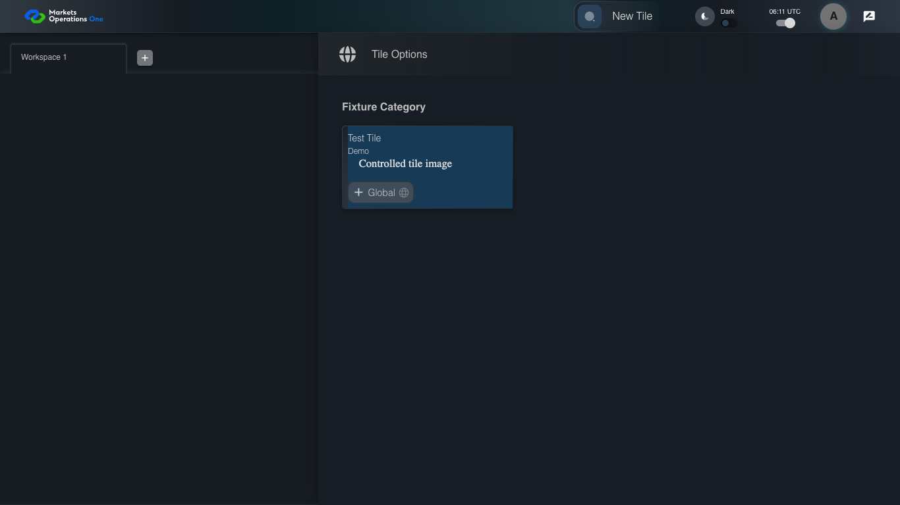

UX-027 responsive shell 1366x768
PASS · application/run-050/ux-027-responsive-shell-1366x768-b463e9210d52-attempt-1 · ACTUAL_APPLICATION_LOCAL_SERVICES
Actual React shell. Controlled catalog, user identity, photo failures, and SystemJS tenant. Chromium only. Accessibility and layout outcomes are proposed probes; no approved conformance standard is inferred.
2026-10-22T06:11:51.618Z to 2026-10-22T06:11:54.839Z
Assertions and result · Artifact manifest · Exact run inputs and source hashes
Result SHA-256:5a525c1c0c7f80481b7b12dcba06032fa82fc411013f18b4fa6573eb95847afdScreenshot capture: CAPTURED. Named frames: 9.
Step screenshot evidence: COMPLETE. 8/8 canonical steps have execution screenshots.
Canonical step timeline
Given USER-A has Home visible at 1366 by 768 CSS pixels
Execution: PASSED.1. step-01 Visible state after step 1: Given USER-A has Home visible at 1366 by 768 CSS pixels
2026-10-22T06:11:53.552Z · 1366×768
Step: /Users/lushevol/code/github/ratan-release-impact/workbench/tasks/ui-test-coverage-20261022/test-cases.md:13127
SHA-256:2f630ca8c817dc1fc2cdd5c30da4b8f76ac04ae412f655e363838c2af4f5d90dWhen USER-A clicks the section labelled "New Tile" on the Home page
Execution: PASSED.
2. step-02 Visible state after step 2: When USER-A clicks the section labelled "New Tile" on the Home page
2026-10-22T06:11:53.767Z · 1366×768
Step: /Users/lushevol/code/github/ratan-release-impact/workbench/tasks/ui-test-coverage-20261022/test-cases.md:13128
SHA-256:2841c042cddb5e5f40ebc03a189c7366d359659246c079d28652d023abe254fcThen The section labelled "Tile Options" on the Home page is visible within the viewport or its scroll area
Execution: PASSED.
3. step-03 Visible state after step 3: Then The section labelled "Tile Options" on the Home page is visible within the viewport or its scroll area
2026-10-22T06:11:53.844Z · 1366×768
Step: /Users/lushevol/code/github/ratan-release-impact/workbench/tasks/ui-test-coverage-20261022/test-cases.md:13129
SHA-256:2841c042cddb5e5f40ebc03a189c7366d359659246c079d28652d023abe254fcWhen USER-A presses "Escape" inside the section labelled "Tile Options" on the Home page
Execution: PASSED.4. step-04 Visible state after step 4: When USER-A presses "Escape" inside the section labelled "Tile Options" on the Home page
2026-10-22T06:11:53.927Z · 1366×768
Step: /Users/lushevol/code/github/ratan-release-impact/workbench/tasks/ui-test-coverage-20261022/test-cases.md:13130
SHA-256:f649d5dd2e14abb049f5d8000a9dc59073d12c028a8dd7ac044fde500b98d1e6Then The section labelled "Tile Options" on the Home page is hidden
Execution: PASSED.5. step-05 Visible state after step 5: Then The section labelled "Tile Options" on the Home page is hidden
2026-10-22T06:11:54.161Z · 1366×768
Step: /Users/lushevol/code/github/ratan-release-impact/workbench/tasks/ui-test-coverage-20261022/test-cases.md:13131
SHA-256:c453d13bf72a11ef47addfbc15295af87f1bc65d9a20f1731af328d0d3c0340fWhen USER-A clicks the icon button with test ID "${MFE_APP_PREFIX_STYLE}_avatar_IconButton" on the Home page
Execution: PASSED.6. step-06 Visible state after step 6: When USER-A clicks the icon button with test ID "${MFE_APP_PREFIX_STYLE}_avatar_IconButton" on the Home page
2026-10-22T06:11:54.280Z · 1366×768
Step: /Users/lushevol/code/github/ratan-release-impact/workbench/tasks/ui-test-coverage-20261022/test-cases.md:13132
SHA-256:4545b983d2a627c08fa93f2cfd1333ab1e0a08e6ca926c7a22f7fba32ac290c5Then The menu item with test ID "${MFE_APP_PREFIX_STYLE}_avatar_Profile" in the menu with identifier "menu-appbar-avatar" on the Home page is visible without overlap with the menu item labelled "Logout" in the menu with identifier "menu-appbar-avatar" on the Home page
Execution: PASSED.
7. step-07 Visible state after step 7: Then The menu item with test ID "${MFE_APP_PREFIX_STYLE}_avatar_Profile" in the menu with identifier "menu-appbar-avatar" on the Home page is visible without overlap with the menu item labelled "Logout" in the menu with identifier "menu-appbar-avatar" on the Home page
2026-10-22T06:11:54.362Z · 1366×768
Step: /Users/lushevol/code/github/ratan-release-impact/workbench/tasks/ui-test-coverage-20261022/test-cases.md:13133
SHA-256:4545b983d2a627c08fa93f2cfd1333ab1e0a08e6ca926c7a22f7fba32ac290c5And The menu item labelled "Logout" in the menu with identifier "menu-appbar-avatar" on the Home page is enabled and reachable within the viewport
Execution: PASSED.
8. step-08 Visible state after step 8: And The menu item labelled "Logout" in the menu with identifier "menu-appbar-avatar" on the Home page is enabled and reachable within the viewport
2026-10-22T06:11:54.428Z · 1366×768
Step: /Users/lushevol/code/github/ratan-release-impact/workbench/tasks/ui-test-coverage-20261022/test-cases.md:13134
SHA-256:4545b983d2a627c08fa93f2cfd1333ab1e0a08e6ca926c7a22f7fba32ac290c5
Additional named frames

The final visible state after the named test assertions.
2026-10-22T06:11:54.541Z · 1366×768Step: Test source: /Users/lushevol/code/github/ratan-release-impact/workbench/e2e/audit-specs/ux-shell.spec.ts:113
SHA-256:
4545b983d2a627c08fa93f2cfd1333ab1e0a08e6ca926c7a22f7fba32ac290c5Screenshots establish visible state only. Assertions and traces support functional claims.